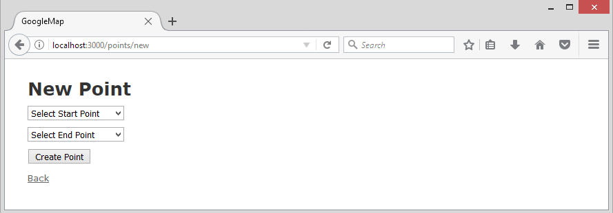

Last modified: Thu Aug 16 2018 22:49:02 GMT+0800 (Malay Peninsula Standard Time)
Chapter 7. Shortest Path Finder
This Shortest Path Finder Web Application will be build on top of Chapter 6’s Application. In Chapter 6, we created an application that is able to retrieve coordinates from the database and plot on the map. We are going to use Dijkstra Shortest Path algorithm and available library to plot the shortest path between two routers. The use case for this application would allow Network Engineer to travel the least distance while doing a monthly maintenance.
Do note that this example is a class project. Do not duplicate this project and submit as your class project without seeking the permission of the author. You may put yourself into trouble due to this is the author’s original work.
7.1 Initial Setup
To begin, follow the instruction the instruction in Chapter 6.1, 6.2, and 6.3 to install the require Gem. At this point, we have everything setup correctly. The example in this chapter will also use the Router example.
In order for our application to calculate the distance and find the shortest path between two points, we need to generate a table that store the distance between two points. You may need to look up how Dijkstra Shortest Path algorithm works before continue reading this chapter.
To create a database table that stores two points, begin and end, and the distance or cost between two points, unit, we use the command below. Depending on your preference, you may use a reference key instead of the method that I use below.
rails g scaffold Point begin:string end:string unit:float
After that, perform a database migration.
By default, when we are creating a new point, there are three input parameters: begin, end, and unit. Since we are going to allow user to choose the points from our table that contains coordinates, we only need two fields: begin and end. The unit or distance between two points will be calculated based on the formula we will create later.
Perform the modification as shown in Table 7.1.1 to allow user to choose the begin and end point from the coordinates database that we have. In this case, the coordinates are coming from Router database table.
Table 7.1.1: Code to remove and add from form
#MyApp/app/views/points/_form.html.erb
#Code to remove
<div class="field">
<%= f.label :begin %>
<%= f.text_field :begin %>
</div>
<div class="field">
<%= f.label :end %>
<%= f.text_field :end %>
</div>
<div class="field">
<%= f.label :unit %>
<%= f.text_field :unit %>
</div>
#Code to add
<div class="field">
<%= f.collection_select :begin, Router.order(:name), :name, :name, :prompt => "Select Start Point" %>
</div>
<div class="field">
<%= f.collection_select :end, Router.order(:name), :name, :name, :prompt => "Select End Point" %>
</div>
API for connection_select method can be found here. You may have to read the documentation in order to understand what is each field in the method.
collection_select(object, method, collection, value_method, text_method, options = {}, html_options = {})
Figure 7.1.1 shows the new point after the modification is made according to Table 7.1.1.

Figure 7.1.1: Creating new point
Figure 7.1.2 shows a drop down menu with information populated from Router database table. Select two different begin and end point and you should be able to create a point without any issue. Figure 7.1.3 shows a point is created successfully with different begin and end point.
Figure 7.1.2: Drop down menu
Figure 7.1.3: Point was successfully created
7.2 Distance Calculation
To calculate the distance between two coordinates, we need to define a method and use some math formula. Add the following code in Table 7.2.1 to your controller. The method distance_between will take in four parameters and it will return the distance in meters.
Table 7.2.1: Code to add to controller
#MyApp/app/controllers/points_controller.rb
def distance_between(lat1, lon1, lat2, lon2)
rad_per_deg = Math::PI / 180
rm = 6371000 # Earth radius in meters
lat1_rad, lat2_rad = lat1 * rad_per_deg, lat2 * rad_per_deg
lon1_rad, lon2_rad = lon1 * rad_per_deg, lon2 * rad_per_deg
a = Math.sin((lat2_rad - lat1_rad) / 2) ** 2 + Math.cos(lat1_rad) * Math.cos(lat2_rad) * Math.sin((lon2_rad - lon1_rad) / 2) ** 2
c = 2 * Math::atan2(Math::sqrt(a), Math::sqrt(1 - a))
rm * c # Delta in meters
end
After that, follow the instruction in Table 7.2.2 to add the code to controller. In Table 7.2.2, we create a load_distance_to_db method to obtain the name from the dropdown menu where user selects. The selected values will then assigned to @start_point and @end_point. We then look up the Router database table to find the row where it matches the name. .first method is used to get the first row of the result. The coordinates of start and end points will be parsed into the distrance_between method and the result will then assigned to @ans.
Table 7.2.2: Code to add to controller
#MyApp/app/controllers/points_controller.rb
def load_distance_to_db
@start_point = params[:point][:begin]
@end_point = params[:point][:end]
@get_start_point = Router.all.where('name' => @start_point).first
@get_end_point = Router.all.where('name' => @end_point).first
@start_long = @get_start_point.longitude
@start_lat = @get_start_point.latitude
@end_long = @get_end_point.longitude
@end_lat = @get_end_point.latitude
@ans = distance_between(@start_lat, @start_long, @end_lat, @end_long)
end
After that, follow the instruction in Table 7.2.3 to add the code to controller. In Table 7.2.3, we create a check_param method to check if the begin is equal to the end point. If begin is equal to the end point, it will redirect user back to the form and alert them that they have chosen the same point. The create and update method are altered slightly to make include the calculation method that we defined earlier.
Table 7.2.3: Code to add to controller
MyApp/app/controllers/points_controller.rb
#Code to delete
def create
@point = Point.new(point_params)
respond_to do |format|
if @point.save
format.html { redirect_to @point, notice: 'Point was successfully created.' }
format.json { render :show, status: :created, location: @point }
else
format.html { render :new }
format.json { render json: @point.errors, status: :unprocessable_entity }
end
end
end
def update
respond_to do |format|
if @point.update(point_params)
format.html { redirect_to @point, notice: 'Point was successfully updated.' }
format.json { render :show, status: :ok, location: @point }
else
format.html { render :edit }
format.json { render json: @point.errors, status: :unprocessable_entity }
end
end
end
#Code to add
def check_param
if params[:point][:begin].blank? || params[:point][:end].blank?
redirect_to(:back, notice: "Select something!") and return
end
end
def create
check_param
load_distance_to_db
@point = Point.new
@point.begin = params[:point][:begin]
@point.end = params[:point][:end]
@point.unit = @ans
respond_to do |format|
if @point.begin == @point.end
redirect_to(:back, notice: "Begin and End are the same!") and return
elsif @point.save
format.html { redirect_to action: "index", notice: 'Point was successfully created.' }
format.json { render :show, status: :created, location: @point }
else
format.html { render :new }
format.json { render json: @point.errors, status: :unprocessable_entity }
end
end
end
def update
check_param
load_distance_to_db
@point.begin = params[:point][:begin]
@point.end = params[:point][:end]
@point.unit = @ans
respond_to do |format|
if @point.begin == @point.end
redirect_to(:back, notice: "Begin and End are the same!") and return
elsif @point.update(point_params)
format.html { redirect_to action: "index", notice: 'Point was successfully updated.' }
format.json { render :show, status: :ok, location: @point }
else
format.html { render :edit }
format.json { render json: @point.errors, status: :unprocessable_entity }
end
end
end
After the modification is made, remove the existing points. Create a new points by choosing two different locations and the distance will then be calculated and stored in unit field in database. Figure 7.2.1 shows the distance between two points is calculated successfully.
Figure 7.2.1: Distance between two points is calculated successfully
7.3 Dijkstra Library
There is one Dijkstra Gem, dijkstra, available that can calculate the shortest distance between two points. However, I found out that the Gem is not really useful for what I am doing. I extracted the main class and include it in my Web Application’s library folder. You may obtain the main class from the dijkstra Gem’s repository or use the code in Table 7.3.1.
Table 7.3.1: Main class of Dijkstra Gem
#File to create
MyApp/lib/dijkstra.rb
Code to add
# Class that calculates the smallest path using Dijkstra Algorithm
class Dijkstra # constructor of the class
def initialize(startpoint, endpoint, matrix_of_road)
@start = startpoint # start node
@end = endpoint # end node
@path = []
@infinit = Float::INFINITY
# Recreating matrix_of_road to avoid passing the number
# of vertices in the first element.
vertices = number_of_vertices(matrix_of_road.dup)
matrix_of_road = matrix_of_road.unshift([vertices])
read_and_init(matrix_of_road)
dijkstra # Dijkstra's algorithm in action and good luck
end
# Calculates the number of vertices (unique elements) in a matrix of road
def number_of_vertices(matrix)
# Ignoring the weight element (third element)
matrix = matrix.collect { |x| [x[0], x[1]] }
matrix = matrix.zip.flatten.compact # Merging all the path arrays
@nodes = matrix.uniq.dup # All the vertices
matrix.uniq.count # Returning the number of unique elements (vertices)
end
# This method determines the minimum cost of the shortest path
def cost
@r[@end]
end
# get the shortest path
def shortest_path
road(@end)
@path
end
def road(node)
road(@f[node]) if @f[node] != 0
@path.push(node)
end
def dijkstra
min = @infinit
pos_min = @infinit
@nodes.each do |i|
@r[i] = @road[[@start, i]]
@f[i] = @start if i != @start && @r[i] < @infinit
end
@s[@start] = 1
@nodes[0..@nodes.size - 2].each do
min = @infinit
@nodes.each do |i|
if @s[i] == 0 && @r[i] < min
min = @r[i]
pos_min = i
end
end
@s[pos_min] = 1
@nodes.each do|j|
if @s[j] == 0
if @r[j] > @r[pos_min] + @road[[pos_min, j]]
@r[j] = @r[pos_min] + @road[[pos_min, j]]
@f[j] = pos_min
end
end
end
end
end
def read_and_init(arr)
n = arr.size - 1
@road = Hash.new(@nodes)
@r = Hash.new(@nodes)
@s = Hash.new(@nodes)
@f = Hash.new(@nodes)
@nodes.each do |i|
@r[i] = 0
end
@nodes.each do |i|
@s[i] = 0
end
@nodes.each do |i|
@f[i] = 0
end
@nodes.each do |i|
@nodes.each do |j|
if i == j
@road[[i, j]] = 0
else
@road[[i, j]] = @infinit
end
end
end
(1..n).each do |i|
x = arr[i][0]
y = arr[i][1]
c = arr[i][2]
@road[[x, y]] = c
end
end
end
To use the library, include the dijkstra library by specifying require 'dijkstra' at the beginning of your controller.
7.4 Search and Result Page
Now, we need to create a search page and a result page. You can use any existing controller for two of the pages. For my choice, I am going to leave it in my points_controller. Table 7.4.1 shows the newly created method for two new pages.
Table 7.4.1: Code to add to controller
#MyApp/app/controllers/points_controller.rb
def search
end
def result
end
In my routes.rb, I have to add the route as shown in Table 7.4.2 to two of the pages.
Table 7.4.2: Code to add to routes
#MyApp/app/config/routes.rb
get '/search' => 'points#search', :as => ‘points_search’
post '/result' => 'points#result', :as => ‘points_result’
Then, we have to create two new files for the view. Table 7.4.3 shows two of the new pages are located in Points’ view.
Table 7.4.3: Code to add to view
#File to create
MyApp/app/views/points/search.html.erb
MyApp/app/views/points/result.html.erb
Since we do not have anything in the two newly created files yet, the page should show a blank page. Figure 7.4.1 shows an empty page for localhost:3000/search.
Figure 7.4.1: Empty page
You should be able to visit localhost:3000/search but not localhost:3000/result since POST method (refer to Table 7.4.2) will create a new resources.
In our search page, we are going to have a Google Map and drop down menus to allow user to choose from two points while the result page will show the result on a Google Map. Table 7.4.4 shows the code for dropdown menu, Google Map, and required Google Map script.
Table 7.4.4: Code to add to search page
#MyApp/app/views/points/search.html.erb
<h1>Input Path</h1>
<%= form_tag(points_result_path, method: "post") do |f| %>
<%= collection_select :point, :begin, Router.order(:name), :name, :name, :prompt => "Select Start Point" %>
<%= collection_select :point, :end, Router.order(:name), :name, :name, :prompt => "Select End Point" %>
<%= submit_tag 'Submit', class: "button btn btn-primary" %>
<% end %>
<div style='width: auto;'>
<div id="map" style='width: auto; height: 500px;'></div>
</div>
<script type="text/javascript">
handler = Gmaps.build('Google');
handler.buildMap({ provider: {}, internal: {id: 'map'}}, function(){
markers = handler.addMarkers(<%=raw @search_default.to_json %>);
handler.bounds.extendWith(markers);
handler.fitMapToBounds();
});
</script>
You may need to look up the documentation for collection_select helper. Do note that f.collection_select and collection_select are two different helpers.
Table 7.4.5 shows the code for result page. The page contains a Google Map and a table to show the visited path in detail. The table will provide starting point, ending point, distance travelled in km and distance travelled in miles,
Table 7.4.5: Code to add to result page
#MyApp/app/views/points/search.html.erb
<h1>Shortest Path</h1>
<h3>Result on Google Map</h3>
<div style='width: auto;'>
<div id="map" style='width: auto; height: 500px;'></div>
</div>
<script type="text/javascript">
handler = Gmaps.build('Google');
handler.buildMap({ provider: {}, internal: {id: 'map'}}, function(){
polyline = <%=raw @output.to_json %>;
handler.addPolyline(polyline);
handler.bounds.extend(polyline[0]);
handler.bounds.extend(polyline[ polyline.length - 1]);
handler.fitMapToBounds();
});
</script>
<h3>Results</h3>
Starting Point: <%= @start_point %><br>
Ending Point: <%= @end_point %><br>
<br>
Distance travelled (km): <%= @distance_km %> km<br>
Distance travelled (miles): <%= @distance_mi %> mi<br>
7.5 Define Search and Result in Controller
The only thing we are missing right now is we have to puzzle everything we have in controller. In Table 7.5.1, we created a new method, load_plot. The method will create fetch @plots object and place it in Gmaps4rails class and method, a method in the Google Map Gem. The name of each of the Router’s name will be put into the info window on the Google Map in load_plot method.
Table 7.5.1: Code to add to controller
#MyApp/app/controllers/points_controller.rb
def search
@plots = Router.all
load_plot
end
def load_plot
@search_default = Gmaps4rails.build_markers(@plots) do |plot, marker|
marker.lat plot.latitude
marker.lng plot.longitude
marker.infowindow plot.name
end
end
Figure 7.5.1 shows a Google Map with router’s name showing on the info window.
Figure 7.5.1: Result of the View
After the modification above is made, in my search page, we are able to see the name of each router on the map in the info window. We are still unable to perform any search since we have not completely defined our result method. Table 7.5.2 shows the updated method for search and result.
Table 7.5.2: Code to add to controller
#MyApp/app/controllers/points_controller.rb
def search
@plots = Router.all
load_plot
end
def result
@c = Router.pluck(:name, :longitude, :latitude)
@r_left = Point.pluck(:begin, :end, :unit)
@r_right = Point.pluck(:end, :begin, :unit)
@r = @r_left+@r_right
@start_point = params[:point][:begin]
@end_point = params[:point][:end]
@ob = Dijkstra.new(@start_point, @end_point, @r)
@shortest_path = @ob.shortest_path
@distance = @ob.cost
@distance_km = (@distance/1000).round(3)
@distance_mi = (@distance*0.00062137).round(3)
@count = @shortest_path.count
$i = 0;
$num = @count;
@output = []
while $i < $num do
@result = Router.all.where('name' => @shortest_path[$i])
@result.each do |result|
@output << { :lat => result.latitude, :lng => result.longitude}
end
$i +=1
end
search
end
7.6 Test and Verify Feature
In order to test and verify my newly added feature, I went to Google Map and obtained a new coordinates. The coordinates are stored in router database table. Then, I create new point by specifying the begin and end location. Figure 7.6.1 shows a list of routers’ location loaded to the database.
Figure 7.6.1: A list of sample coordinates loaded to the Application
Figure 7.6.2 shows a list of points that I created. The points I loaded to my application are the walkable locations. Each location is connected to the junction.
Figure 7.6.2: A list of points and the distance between two points were generated
In the search page, choose a starting and an ending point. Figure 7.6.3 shows “Associate Student House” is chosen as the starting point and “D1_05” is chosen as the ending point. The walkable distance is then drawn on the Google Map. The distance travelled in kilometer (km) and miles are also shown in the Results section.
Figure 7.6.3: Result of the shortest path drawn on the screen